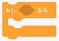
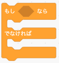
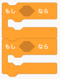
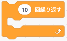
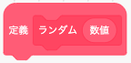

<!DOCTYPE html>
<html>
<head>
<title>step05.md</title>
<meta http-equiv="Content-type" content="text/html;charset=UTF-8">

<style>
/*---------------------------------------------------------------------------------------------
 *  Copyright (c) Microsoft Corporation. All rights reserved.
 *  Licensed under the MIT License. See License.txt in the project root for license information.
 *--------------------------------------------------------------------------------------------*/

body {
	font-family: "Segoe WPC", "Segoe UI", "SFUIText-Light", "HelveticaNeue-Light", sans-serif, "Droid Sans Fallback";
	font-size: 14px;
	padding: 0 12px;
	line-height: 22px;
	word-wrap: break-word;
}

#code-csp-warning {
	position: fixed;
	top: 0;
	right: 0;
	color: white;
	margin: 16px;
	text-align: center;
	font-size: 12px;
	font-family: sans-serif;
	background-color:#444444;
	cursor: pointer;
	padding: 6px;
	box-shadow: 1px 1px 1px rgba(0,0,0,.25);
}

#code-csp-warning:hover {
	text-decoration: none;
	background-color:#007acc;
	box-shadow: 2px 2px 2px rgba(0,0,0,.25);
}


body.scrollBeyondLastLine {
	margin-bottom: calc(100vh - 22px);
}

body.showEditorSelection .code-line {
	position: relative;
}

body.showEditorSelection .code-active-line:before,
body.showEditorSelection .code-line:hover:before {
	content: "";
	display: block;
	position: absolute;
	top: 0;
	left: -12px;
	height: 100%;
}

body.showEditorSelection li.code-active-line:before,
body.showEditorSelection li.code-line:hover:before {
	left: -30px;
}

.vscode-light.showEditorSelection .code-active-line:before {
	border-left: 3px solid rgba(0, 0, 0, 0.15);
}

.vscode-light.showEditorSelection .code-line:hover:before {
	border-left: 3px solid rgba(0, 0, 0, 0.40);
}

.vscode-dark.showEditorSelection .code-active-line:before {
	border-left: 3px solid rgba(255, 255, 255, 0.4);
}

.vscode-dark.showEditorSelection .code-line:hover:before {
	border-left: 3px solid rgba(255, 255, 255, 0.60);
}

.vscode-high-contrast.showEditorSelection .code-active-line:before {
	border-left: 3px solid rgba(255, 160, 0, 0.7);
}

.vscode-high-contrast.showEditorSelection .code-line:hover:before {
	border-left: 3px solid rgba(255, 160, 0, 1);
}

img {
	max-width: 100%;
	max-height: 100%;
}

a {
	color: #4080D0;
	text-decoration: none;
}

a:focus,
input:focus,
select:focus,
textarea:focus {
	outline: 1px solid -webkit-focus-ring-color;
	outline-offset: -1px;
}

hr {
	border: 0;
	height: 2px;
	border-bottom: 2px solid;
}

h1 {
	padding-bottom: 0.3em;
	line-height: 1.2;
	border-bottom-width: 1px;
	border-bottom-style: solid;
}

h1, h2, h3 {
	font-weight: normal;
}

h1 code,
h2 code,
h3 code,
h4 code,
h5 code,
h6 code {
	font-size: inherit;
	line-height: auto;
}

a:hover {
	color: #4080D0;
	text-decoration: underline;
}

table {
	border-collapse: collapse;
}

table > thead > tr > th {
	text-align: left;
	border-bottom: 1px solid;
}

table > thead > tr > th,
table > thead > tr > td,
table > tbody > tr > th,
table > tbody > tr > td {
	padding: 5px 10px;
}

table > tbody > tr + tr > td {
	border-top: 1px solid;
}

blockquote {
	margin: 0 7px 0 5px;
	padding: 0 16px 0 10px;
	border-left: 5px solid;
}

code {
	font-family: Menlo, Monaco, Consolas, "Droid Sans Mono", "Courier New", monospace, "Droid Sans Fallback";
	font-size: 14px;
	line-height: 19px;
}

body.wordWrap pre {
	white-space: pre-wrap;
}

.mac code {
	font-size: 12px;
	line-height: 18px;
}

pre:not(.hljs),
pre.hljs code > div {
	padding: 16px;
	border-radius: 3px;
	overflow: auto;
}

/** Theming */

.vscode-light,
.vscode-light pre code {
	color: rgb(30, 30, 30);
}

.vscode-dark,
.vscode-dark pre code {
	color: #DDD;
}

.vscode-high-contrast,
.vscode-high-contrast pre code {
	color: white;
}

.vscode-light code {
	color: #A31515;
}

.vscode-dark code {
	color: #D7BA7D;
}

.vscode-light pre:not(.hljs),
.vscode-light code > div {
	background-color: rgba(220, 220, 220, 0.4);
}

.vscode-dark pre:not(.hljs),
.vscode-dark code > div {
	background-color: rgba(10, 10, 10, 0.4);
}

.vscode-high-contrast pre:not(.hljs),
.vscode-high-contrast code > div {
	background-color: rgb(0, 0, 0);
}

.vscode-high-contrast h1 {
	border-color: rgb(0, 0, 0);
}

.vscode-light table > thead > tr > th {
	border-color: rgba(0, 0, 0, 0.69);
}

.vscode-dark table > thead > tr > th {
	border-color: rgba(255, 255, 255, 0.69);
}

.vscode-light h1,
.vscode-light hr,
.vscode-light table > tbody > tr + tr > td {
	border-color: rgba(0, 0, 0, 0.18);
}

.vscode-dark h1,
.vscode-dark hr,
.vscode-dark table > tbody > tr + tr > td {
	border-color: rgba(255, 255, 255, 0.18);
}

.vscode-light blockquote,
.vscode-dark blockquote {
	background: rgba(127, 127, 127, 0.1);
	border-color: rgba(0, 122, 204, 0.5);
}

.vscode-high-contrast blockquote {
	background: transparent;
	border-color: #fff;
}
</style>

<style>
/* Tomorrow Theme */
/* http://jmblog.github.com/color-themes-for-google-code-highlightjs */
/* Original theme - https://github.com/chriskempson/tomorrow-theme */

/* Tomorrow Comment */
.hljs-comment,
.hljs-quote {
	color: #8e908c;
}

/* Tomorrow Red */
.hljs-variable,
.hljs-template-variable,
.hljs-tag,
.hljs-name,
.hljs-selector-id,
.hljs-selector-class,
.hljs-regexp,
.hljs-deletion {
	color: #c82829;
}

/* Tomorrow Orange */
.hljs-number,
.hljs-built_in,
.hljs-builtin-name,
.hljs-literal,
.hljs-type,
.hljs-params,
.hljs-meta,
.hljs-link {
	color: #f5871f;
}

/* Tomorrow Yellow */
.hljs-attribute {
	color: #eab700;
}

/* Tomorrow Green */
.hljs-string,
.hljs-symbol,
.hljs-bullet,
.hljs-addition {
	color: #718c00;
}

/* Tomorrow Blue */
.hljs-title,
.hljs-section {
	color: #4271ae;
}

/* Tomorrow Purple */
.hljs-keyword,
.hljs-selector-tag {
	color: #8959a8;
}

.hljs {
	display: block;
	overflow-x: auto;
	color: #4d4d4c;
	padding: 0.5em;
}

.hljs-emphasis {
	font-style: italic;
}

.hljs-strong {
	font-weight: bold;
}
</style>

<style>
/*
 * Markdown PDF CSS
 */

 body {
	font-family:  "Meiryo", "Segoe WPC", "Segoe UI", "SFUIText-Light", "HelveticaNeue-Light", sans-serif, "Droid Sans Fallback";
}

pre {
	background-color: #f8f8f8;
	border: 1px solid #cccccc;
	border-radius: 3px;
	overflow-x: auto;
	white-space: pre-wrap;
	overflow-wrap: break-word;
}

pre:not(.hljs) {
	padding: 23px;
	line-height: 19px;
}

blockquote {
	background: rgba(127, 127, 127, 0.1);
	border-color: rgba(0, 122, 204, 0.5);
}

.emoji {
	height: 1.4em;
}

/* for inline code */
:not(pre):not(.hljs) > code {
	color: #C9AE75; /* Change the old color so it seems less like an error */
	font-size: inherit;
}

/* Page Break : use <div class="page"/> to insert page break
-------------------------------------------------------- */
.page {
	page-break-after: always;
}

</style>

</head>
<body>
<h1 id="javascript%E3%83%97%E3%83%AD%E3%82%B0%E3%83%A9%E3%83%9F%E3%83%B3%E3%82%B0%E3%81%AE%E5%9F%BA%E7%A4%8E2">JavaScriptプログラミングの基礎2</h1>
<p>複雑な処理をするには条件分岐や繰り返し、関数などを使ってプログラミングすることが必要になります。<br>
スクラッチを例にプログラムの書き方を学びましょう。</p>
<h2 id="%E3%81%93%E3%81%AE%E3%82%AB%E3%83%AA%E3%82%AD%E3%83%A5%E3%83%A9%E3%83%A0%E3%81%AE%E3%81%AD%E3%82%89%E3%81%84">このカリキュラムのねらい</h2>
<ul>
<li>条件分岐文の書き方を学びます</li>
<li>比較演算子の書き方と意味を学びます</li>
<li>論理演算の書き方と意味を学びます</li>
<li>繰り返し文の書き方を学びます</li>
<li>関数の書き方を学びます</li>
<li>変数の有効範囲を学びます</li>
</ul>
<hr>
<h2 id="javascript%E3%83%97%E3%83%AD%E3%82%B0%E3%83%A9%E3%83%9F%E3%83%B3%E3%82%B0">JavaScriptプログラミング</h2>
<h3 id="%E6%9D%A1%E4%BB%B6%E5%88%86%E5%B2%90%E6%96%87">条件分岐文</h3>
<p>条件分岐（じょうけんぶんき）とは、プログラムの中である条件が満たされているかどうかによって次に実行するプログラムのことをいいます。<br>
スクラッチをベースに説明します。</p>
<ul>
<li>
<p>if（もし 〜 なら）<br>
</p>
<pre class="hljs"><code><div><span class="hljs-comment">// もし 〜 なら</span>
<span class="hljs-keyword">if</span> (条件) {
    <span class="hljs-comment">// 処理</span>
}
</div></code></pre>
</li>
<li>
<p>else（もし 〜 なら、でなければ）<br>
</p>
<pre class="hljs"><code><div><span class="hljs-comment">// もし 〜 なら</span>
<span class="hljs-keyword">if</span> (条件) {
    <span class="hljs-comment">// 処理</span>
}
<span class="hljs-comment">// でなければ</span>
<span class="hljs-keyword">else</span> {
    <span class="hljs-comment">// 処理</span>
}
</div></code></pre>
</li>
<li>
<p>else if（もし 〜 なら、もし 〜 なら）<br>
</p>
<pre class="hljs"><code><div><span class="hljs-comment">// もし 〜 なら</span>
<span class="hljs-keyword">if</span> (条件) {
    <span class="hljs-comment">// 処理</span>
}
<span class="hljs-comment">// もし 〜 なら</span>
<span class="hljs-keyword">else</span> <span class="hljs-keyword">if</span> (条件) {
    <span class="hljs-comment">// 処理</span>
}
</div></code></pre>
</li>
</ul>
<h3 id="%E6%AF%94%E8%BC%83%E6%BC%94%E7%AE%97%E5%AD%90">比較演算子</h3>
<p>コンピュータの世界では、計算のことを演算（えんざん）と呼びます。<br>
比較演算子は、2つの対象の関係を比較した結果を真偽値（true または false）で返却します。</p>
<ul>
<li>
<p>〜より大きい、〜より小さい</p>
  
     
<pre class="hljs"><code><div><span class="hljs-keyword">var</span> a = <span class="hljs-number">1</span>;
<span class="hljs-keyword">var</span> b = <span class="hljs-number">0</span>;

<span class="hljs-comment">// aはbよりおおきい</span>
result = a &gt; b;
concole.log(result);    <span class="hljs-comment">// true</span>

<span class="hljs-comment">// bはaよりおおきい</span>
result = b &gt; a;
concole.log(result);    <span class="hljs-comment">// false</span>

<span class="hljs-comment">// aはbよりちいさい</span>
result = a &lt; b;
concole.log(result);    <span class="hljs-comment">// false</span>

<span class="hljs-comment">// bはaよりちいさい</span>
result = b &lt; a;
concole.log(result);    <span class="hljs-comment">// true</span>
</div></code></pre>
</li>
<li>
<p>〜以上、〜以下<br>
※ スクラッチに該当するブロックなし</p>
<pre class="hljs"><code><div><span class="hljs-keyword">var</span> a = <span class="hljs-number">1</span>;
<span class="hljs-keyword">var</span> b = <span class="hljs-number">0</span>;

<span class="hljs-comment">// aはb以上</span>
result = a &gt;= b;
concole.log(result);    <span class="hljs-comment">// true</span>

<span class="hljs-comment">// bはa以上</span>
result = b &gt;= a;
concole.log(result);    <span class="hljs-comment">// false</span>

<span class="hljs-comment">// aはb以下</span>
result = a &lt;= b;
concole.log(result);    <span class="hljs-comment">// false</span>

<span class="hljs-comment">// bはa以下</span>
result = b &lt;= a;
concole.log(result);    <span class="hljs-comment">// true</span>
</div></code></pre>
</li>
<li>
<p>〜同じ、〜同じではない</p>
  
     
<pre class="hljs"><code><div><span class="hljs-keyword">var</span> a = <span class="hljs-number">1</span>;
<span class="hljs-keyword">var</span> b = <span class="hljs-number">0</span>;

<span class="hljs-comment">// aとbは同じ</span>
result = a == b;
concole.log(result);    <span class="hljs-comment">// false</span>

<span class="hljs-comment">// aとbは同じではない</span>
result = a != b;
concole.log(result);    <span class="hljs-comment">// true</span>
</div></code></pre>
</li>
</ul>
<h3 id="%E8%AB%96%E7%90%86%E6%BC%94%E7%AE%97">論理演算</h3>
<p>論理演算（ろんりえんざん）とは、ある論理式において正しい「真（しん）：true」か、正しくない「偽（ぎ）：false」を判断する計算式になります。</p>
<ul>
<li>
<p>論理積（AND：あんど）<br>
<br>
どちらの条件式も真（true）になったら <code>{ }</code> の中の処理を行います。<br>
どちらかが偽（false）の場合は <code>{ }</code> の中の処理は行われません。</p>
<pre class="hljs"><code><div><span class="hljs-comment">// かつ</span>
<span class="hljs-keyword">if</span> (条件式 &amp;&amp; 条件式) {
    <span class="hljs-comment">// 処理</span>
}
</div></code></pre>
<pre class="hljs"><code><div><span class="hljs-keyword">var</span> a = <span class="hljs-number">1</span>;
<span class="hljs-keyword">var</span> b = <span class="hljs-number">1</span>;
<span class="hljs-keyword">var</span> c = <span class="hljs-number">2</span>;

<span class="hljs-comment">// どちらもtrue</span>
<span class="hljs-keyword">if</span> ( a == b &amp;&amp; b &lt;= c) {
    <span class="hljs-comment">// 処理は実行される</span>
}

<span class="hljs-comment">// a != b は false</span>
<span class="hljs-keyword">if</span> ( a != b &amp;&amp; b &lt;= c) {
    <span class="hljs-comment">// 処理は実行されない</span>
}
</div></code></pre>
</li>
<li>
<p>論理和（OR：おあ）<br>
</p>
<p>どちらかの条件式が真（true）になったら <code>{ }</code> の中の処理を行います。<br>
どちらも偽（false）の場合は <code>{ }</code> の中の処理は行われません。</p>
<pre class="hljs"><code><div><span class="hljs-comment">// または</span>
<span class="hljs-keyword">if</span> (条件式 || 条件式) {
    <span class="hljs-comment">// 処理</span>
}
</div></code></pre>
<pre class="hljs"><code><div><span class="hljs-keyword">var</span> a = <span class="hljs-number">1</span>;
<span class="hljs-keyword">var</span> b = <span class="hljs-number">1</span>;
<span class="hljs-keyword">var</span> c = <span class="hljs-number">2</span>;

<span class="hljs-comment">// a == b は true</span>
<span class="hljs-keyword">if</span> ( a == b &amp;&amp; b == c) {
    <span class="hljs-comment">// 処理は実行される</span>
}

<span class="hljs-comment">// a != b も b == c どちらもfalse</span>
<span class="hljs-keyword">if</span> ( a != b &amp;&amp; b == c) {
    <span class="hljs-comment">// 処理は実行されない</span>
}
</div></code></pre>
</li>
<li>
<p>否定（NOT：のっと）<br>
</p>
<p>否定（NOT）の論理演算では真の場合は偽、偽の場合は真に条件式の評価が反転します。</p>
<p>よって、条件式が偽（false）の場合は <code>{ }</code> の中の処理を行います。<br>
条件式が真（true）の場合は <code>{ }</code> の中の処理は行われません。</p>
<pre class="hljs"><code><div><span class="hljs-comment">// 否定</span>
<span class="hljs-keyword">if</span> (　!(条件式) ) {
    <span class="hljs-comment">// 処理</span>
}
</div></code></pre>
<pre class="hljs"><code><div><span class="hljs-keyword">var</span> a = <span class="hljs-number">1</span>;
<span class="hljs-keyword">var</span> b = <span class="hljs-number">1</span>;

<span class="hljs-comment">// a == b は true</span>
<span class="hljs-keyword">if</span> ( !(a == b) ) {
    <span class="hljs-comment">// 処理は実行されない</span>
}

<span class="hljs-comment">// a != b は false</span>
<span class="hljs-keyword">if</span> ( !(a != b) ) {
    <span class="hljs-comment">// 処理は実行される</span>
}
</div></code></pre>
</li>
</ul>
<h3 id="%E7%B9%B0%E3%82%8A%E8%BF%94%E3%81%97%E6%96%87">繰り返し文</h3>
<ul>
<li>
<p>？回繰り返す<br>
</p>
<pre class="hljs"><code><div><span class="hljs-comment">// 10回繰り返す</span>
<span class="hljs-keyword">for</span>(<span class="hljs-keyword">var</span> i = <span class="hljs-number">0</span>; i &lt; <span class="hljs-number">10</span>; i++) {
    <span class="hljs-comment">// 繰り返す処理</span>
}
</div></code></pre>
<p>変数iを0から1つづつ足して、10回まで繰り返す処理です。<br>
それぞれ以下の意味になります。</p>
<pre class="hljs"><code><div>初期値： var i = 0;  
条件式： i &lt; 10;  
増減値： i++;  
</div></code></pre>
</li>
</ul>
<h3 id="%E9%96%A2%E6%95%B0">関数</h3>
   
<p>実行したいいくつかのプログラムをまとめて定義できるのが関数です。<br>
スクラッチではブロックとして用意されていました。</p>
<p>文法）</p>
<pre class="hljs"><code><div>function 関数名(引数名) {
    return 返却値;
}
</div></code></pre>
<p>乱数（ランダムな値）を取得するための関数の例です。<br>
与えられた引数までの乱数を計算して、呼び出し元に返します。</p>
<pre class="hljs"><code><div><span class="hljs-function"><span class="hljs-keyword">function</span> <span class="hljs-title">random</span>(<span class="hljs-params">num</span>) </span>{
    <span class="hljs-keyword">var</span> data = (numを乱数に計算);
    <span class="hljs-keyword">return</span> data;
}
<span class="hljs-built_in">console</span>.log(random(<span class="hljs-number">100</span>));
</div></code></pre>
<p>スクラッチと違い、関数には返却値として値を返すことができます。</p>
<h3 id="%E5%A4%89%E6%95%B0%E3%81%AE%E6%9C%89%E5%8A%B9%E7%AF%84%E5%9B%B2">変数の有効範囲</h3>
<p>JavaScriptには変数の有効範囲があります。<br>
有効範囲を示す <code>{}</code> のことを <code>スコープ</code> といいます。</p>
<pre class="hljs"><code><div><span class="hljs-keyword">var</span> a = <span class="hljs-number">1</span>;
<span class="hljs-keyword">if</span> (<span class="hljs-literal">true</span>) {
    <span class="hljs-keyword">var</span> b = <span class="hljs-number">2</span>;
    <span class="hljs-comment">// この処理は成功する</span>
    <span class="hljs-built_in">console</span>.log(a+b);
}
<span class="hljs-comment">// この処理はエラーとなる</span>
<span class="hljs-built_in">console</span>.log(a+b);
</div></code></pre>
<p>変数aはスコープの外にあるため最後のログ出力で計算できますが、変数bはif文の中までしか有効ではありません。<br>
そのため、スコープ外から変数bを呼びだすため、エラーとなりプログラムが止まってしまいます。</p>
<p>変数の有効範囲は <code>{}</code>（スコープ）となることを覚えておきましょう。</p>
<hr>
<p>©️スタートプログラミング</p>

</body>
</html>
